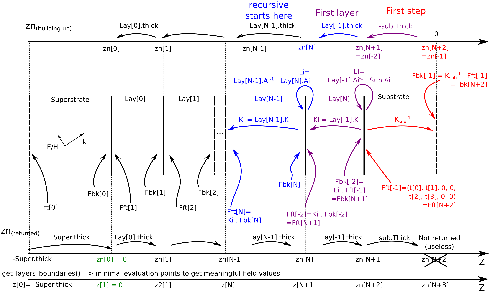

GTMcore module¶
This program implements the generalized 4x4 transfer matrix (GTM) method poposed in Passler, N. C. and Paarmann, A., JOSA B 34, 2128 (2017) and corrected in JOSA B 36, 3246 (2019), as well as the layer-resolved absorption proposed in Passler, Jeannin and Paarman. This code uses inputs from D. Dietze’s FSRStools library https://github.com/ddietze/FSRStools
Please cite the relevant associated publications if you use this code.
- Author:
Mathieu Jeannin math.jeannin@free.fr (permanent)
- Affiliations:
Laboratoire de Physique de l’Ecole Normale Superieure (2019)
Centre de Nanosciences et Nanotechnologies (2020)
Layers are represented by the Layer class that holds all parameters
describing the optical properties of a single layer.
The optical system is assembled using the System class.
Change log:
19-03-2020:
Adapted the code to compute the layer-resolved absorption as proposed by Passler et al. (https://arxiv.org/abs/2002.03832), using
System.calculate_Poynting_Absorption_vs_z().Include the correct calculation of intensity transmission coefficients in
System.calculate_r_t(). This BREAKS compatibility with the previous definition of the function.Corrected bugs in
System.calculate_Efield()and added magnetic field optionAdapted
System.calculate_Efield()to allow hand-defined, irregular grid and a shorthand to compute only at layers interfaces. Regular grid with fixed resolution is left as an option.
- 20-09-2019:
Added functions in the
Systemclass to compute in-plane wavevector of guided modes and dispersion relation for such guided surface modes. This is highly prospective as it depends on the robustness of the minimization procedure (or the lack of thereoff)
The main algorithm is based on solving the eigenvalue equation for the electric field in each layer. The results are then propagated in a step-wised manner layer by layer accross the entire stack.
The Layer class¶
-
class
GTM.GTMcore.Layer(thickness=1e-06, epsilon1=None, epsilon2=None, epsilon3=None, theta=0, phi=0, psi=0)¶ Layer class. An instance is a single layer:
- Parameters
thickness (float) – thickness of the layer in m
epsilon1 (function) – function epsilon(frequency) for the first axis. If none, defaults to vacuum.
epsilon2 (function) – function epsilon(frequency) for the second axis. If none, defaults to epsilon1.
epsilon3 (function) – function epsilon(frequency) for the third axis. If none, defaults to epsilon1.
theta (float) – Euler angle theta (colatitude)
phi (float) – Euler angle phi
psi (float) – Euler angle psi
-
calculate_epsilon(f)¶ Sets the value of epsilon in the (rotated) lab frame.
The values are set according to the epsilon_fi (i=1..3) functions defined using the ‘set_epsilon’ method, at the given frequency f. The rotation w/ respect to the lab frame is computed using the Euler angles.
** Use only explicitely if you don’t use the update function **
-
calculate_gamma(zeta)¶ Calculate the gamma matrix
- Parameters
zeta (complex) – in-plane reduced wavevector kx/k0
-
calculate_matrices(zeta)¶ Calculate the principal matrices necessary for the GTM algorithm.
- Parameters
zeta (complex128) – in-place reduced wavevector kx/k0 in the system.
Note that zeta is conserved through the whole system and set externaly using the angle of incidence and System.superstrate.epsilon[0,0] value
** Requires prior execution of calculate_epsilon **
-
calculate_q()¶ This function calculates the 4 out-of-plane wavevectors for the current layer.
From this we also get the Poynting vectors. Wavevectors are sorted according to (trans-p, trans-s, refl-p, refl-s) Birefringence is determined according to a threshold value qsd_thr set at the beginning of the script.
-
calculate_transfer_matrix(f, zeta)¶ Compute the transfer matrix of the whole layer T=APA^{-1}
- Parameters
f (float) – frequency
zeta (complex) – reduced in-plane wavevector kx/k0
-
set_epsilon(epsilon1=None, epsilon2=None, epsilon3=None)¶ Sets the dielectric functions for the three main axis.
Each epsilon_i function returns the dielectric constant along axis i as a function of the frequency f in Hz.
epsilon1 defaults to 1.0 epsilon2 and epsilon3 default to epsilon1: if None, a homogeneous material is assumed
-
set_euler(theta, phi, psi)¶ Sets the values for the Euler rotations angles. :param float theta: Euler angle theta (colatitude) :param float phi: Euler angle phi :param float psi: Euler angle psi
-
set_thickness(thickness)¶ Sets the layer thickness
-
update(f, zeta)¶ Shortcut to recalculate all layer properties.
- Parameters
zeta (float) – in-plane propagation vector (reduced)
f (float) – Frequency value.
- Returns
matrices Ai, Ki, Ai^{-1} and Ti
The System class¶
-
class
GTM.GTMcore.System(substrate=None, superstrate=None, layers=[])¶ System class. An instance is an optical system with substrate, superstrate and layers.
- Parameters
theta (float) – angle of incidence, in radians
substrate (layer) – the substrate layer. defaults to vacuum (empty layer instance)
superstrate (layer) – the superstrate layer, defaults to vacuum (empty layer instance)
layers (list) – list of the layers
Layers can be added and removed (not inserted).
The whole system’s transfer matrix is computed using calculate_GammaStar, which calls layer.update() for each layer. General reflection and transmission coeffs. functions are given, they require prior execution of calculate_GammaStar. The electric fields can be visualized in the case of incident plane wave using calculate_Efield
-
add_layer(layer)¶ Add a layer instance.
- Parameters
layer (layer) – the layer to be added on the stack
Note that the layers are added from superstrate to substrate order. Light is incident from the superstrate.
Note thate this function adds a reference to L to the list. If you are adding the same layer several times, be aware that if you change something for one of them, it changes all of them.
-
calculate_Efield(f, zeta_sys, z_vect=None, x=0.0, magnetic=False, dz=None)¶ Calculate the electric field profiles for both s-pol and p-pol excitation.
- ..Version 19-03-2020:
changed keywords to add z_vect z_vect is used for either minimal computation (using get_layers_boundaries) or hand-defined z-positions (e.g. irregular spacing for improved resolution) if dz is given, a regular grid is used. A sketch of the definition of all fields and algorithm is supplied in the module, to better get a grasp on where Fft and Fbk are defined.
- ..Version 28-01-2020:
Added Magnetic field keyword to save time. Poyting and absorption defined in a separate function
- ..Version 06-01-2020:
Added Magnetic field and Poyting vector.
- ..Version 13-09-2019:
the 2D field profile is not implemented yet. x should be left to default
- Parameters
f (float) – frequency (Hz)
zeta_sys (complex) – in-plane normalized wavevector kx/k0
z_vect (float) – coordinates at which the calculation is done. if None, the layers boundaries are used.
x (array) – x-coordinates for (future) 2D plot of the electric field.
magnetic (bool) – boolean to skip or compute the magnetic field vector
dz (float) – space resolution along propagation (z) axis. Superseed z_vect
- Returns
1D array of z-coordinates according to dz
- Returns
(len(z),3)-Array E_out of total electric field in the structure
- Return (opt)
(len(z),3)-Array H_out of total magnetic field in the structure
- Returns
list zn of the positions of the different interfaces
-
calculate_GammaStar(f, zeta_sys)¶ Calculate the whole system’s transfer matrix GammaStar
- Parameters
f (float) – frequency (Hz)
zeta_sys (complex) – in-plane wavevector kx/k0
- Returns
System transfer matrix np.array((4,4), dtype=np.complex128)
-
calculate_Poynting_Absorption_vs_z(z, E, H, R)¶ Calculate the z-dependent Poynting vector and cumulated absorption.
- Parameters
z (array) – spatial coordinate for the fields
E (array) – 6-components Electric field vector (p- or s- in) along z
H (array) – 6-components Magnetic field vector (p- or s- in) along z
R (array) – Reflectivity from calculate_r_t()
- Return array S_out
6 components (p//s) Poyting vector along z
- Return array A_out
2 components (p//s) absorption along z
-
calculate_eigen_wv(zeta0, f, bounds=None)¶ Get the eigenmode in-plane wavevector that shows guiding along the plane. Based on the idea that guided mode := an output field exists with no input field This is strongly dependant on the minimization procedure and thus has to be consistently and carefully checked.
- Parameters
zeta0 (2-tuple) – initial guess for the minimization procedure
f (float) – frequency
bounds (optional) (list) – list of 2-tuple containing (lower, upper) bound for each parameter
- Returns
result of the minimization procedure. Eigenvalue is the list res.x
-
calculate_matelem(zeta0, f)¶ Returns the relevant quantity to find waveguide modes according to Davis’ paper on multilayers (scalar model http://doi.org/10.1016/j.optcom.2008.09.043) and then Yeh (4X4 formalism http://doi.org/10.1016/0039-6028(80)90293-9).
- Parameters
zeta0 (2-tuple) – Tuple [zeta_r, zeta_i] of real and imaginary part of the wavevector
f (float) – frequency
- Returns
matrix element to minimize for dispersion relation (absolute value)
-
calculate_r_t(zeta_sys)¶ Calculate various field and intensity reflection and transmission coefficients, as well as the 4-valued vector of transmitted field.
IMPORTANT ..version 19-03-2020 All intensity coefficients are now well defined. Transmission is defined mode-independently. It could be defined mode-dependently for non-birefringent substrates in future versions. The new definition of this function BREAKS compatibility with the previous one.
..version 13-09-2019 Note that the field reflectivity and transmission coefficients r and t are well defined. The intensity reflection coefficient is also correct. However, the intensity transmission coefficients T are ill-defined so far. This will be corrected upon future publication of the correct intensity coefficients.
Note also the different ordering of the coefficients, for consistency w/ Passler’s matlab code
- Parameters
zeta_sys (complex) – incident in-plane wavevector
- Returns
Complex field reflection coefficients r_out=([rpp,rps,rss,rsp])
- Returns
Real intensity reflection coefficients R_out=([Rpp,Rss,Rsp,Tps])
- Returns
Complex field transmition coefficients t=([tpp, tps, tsp, tss])
- Returns
Real intensity transmition coefficients T_out=([Tp,Ts]) (mode-inselective)
-
del_layer(pos)¶ Remove a layer at given position. Does nothing for invalid position.
- Parameters
pos (integer) – index of layer to be removed.
-
disp_vs_f(fv, zeta0, bounds=None)¶ Performs a frequency dependent search of the eigenwavevector for a guided mode to get the dispersion relation of a surface mode.
Provided a reasonable initial guess for the first frequency point, we use the eigen_wv from the above method and follow its value as a function of frequency in a stepping manner.
- Parameters
fv (array) – array of frequencies
zeta0 (2-tuple) – initial guess
bounds (list) – list of 2-tuple containing (lower, upper) bound for each parameter
- Returns
array of real part of the in-plane wavevector
- Returns
array of imagniary part of the in-plane wavevector
-
get_all_layers()¶ Returns the list of all layers in the system
-
get_layer(pos)¶ Get the layer at a given position
- Parameters
pos (int) – position in the stack
- Returns
the layer at the position pos
-
get_layers_boundaries()¶ Return the z-position of all boundaries, including the “top” of the superstrate and the “bottom” of the substrate. This corresponds to where the fields should be evaluated to get a minimum of information
“return” : array of layer boundary positions
-
get_spatial_permittivity(z)¶ Extract the permittivity tensor at given z in the structure
- Parameters
z (array) – array of points to sample the permittivity
- Returns
array (3x3xlen(z)) of the permittivity tensor
-
get_substrate()¶ Returns the System’s substrate
- Returns
the System substrate
-
get_superstrate()¶ Returns the System’s superstrate
- Returns
the System superstrate
-
initialize_sys(f)¶ Sets the values of epsilon at given frequency, allowing to define zeta out of the class
- Parameters
f (float) – frequency (Hz)
-
set_substrate(sub)¶ Set the substrate
- Parameters
sub (layer) – instance of the layer class, substrate
-
set_superstrate(sup)¶ Set the superstrate
- Parameters
sup (layer) – instance of the layer class, superstrate